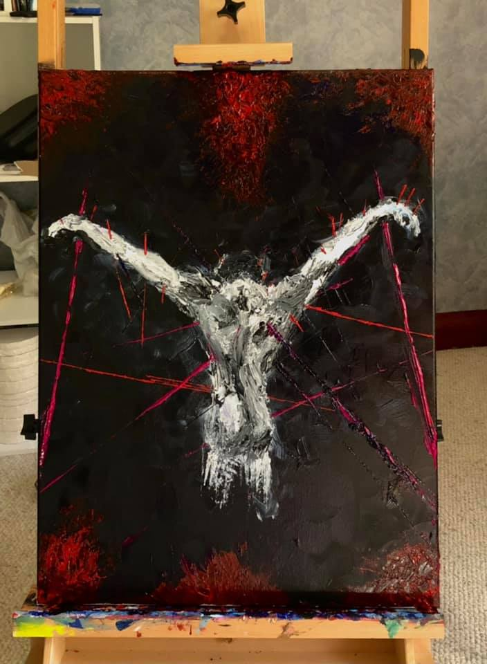

From "Walking Between Worlds" — Dark Things
"Art has always been a part of who I am—not as a distant ideal or career choice, but as a survival mechanism. As a combat veteran, I've seen firsthand what happens to the human mind and soul when placed in the crucible of war. Art became the bridge."
The following works are included in the Walking Between Worlds book, each accompanied by personal reflections on the experiences that shaped them.
Dark Things — The Collection
Confronting the shadows — the weight of memory, the persistence of trauma, and the strange beauty found in difficult places.

Last Battle

PTSD

Inferno

Reprieve
Trio

Soldier Angel

City Aflame

City Reborn

Valley of the Shadow

Breach

Self-Imposed
Self-Imposed
A piece exploring internal suffering, harsh self-judgment, and the difficulty of breaking free from emotional chains. The artwork uses a muted palette with sharp contrasts to depict a desolate yet human space, conveying the tension between freedom and revealing truths.
The Artist's Statement
From the book:
These aren't easy pieces to look at, and they weren't easy to create. But they needed to exist. Every piece here comes from a specific memory, a specific moment. Some are from deployments. Some are from the quiet afterward, when the noise stops and the ghosts come out. They're not pretty, and they're not meant to be.
If you're here because you know that weight, you're not alone. That's the whole point.
Available in the Book
All of these pieces are included in Walking Between Worlds, along with the full artist's statement and personal reflections on each work.